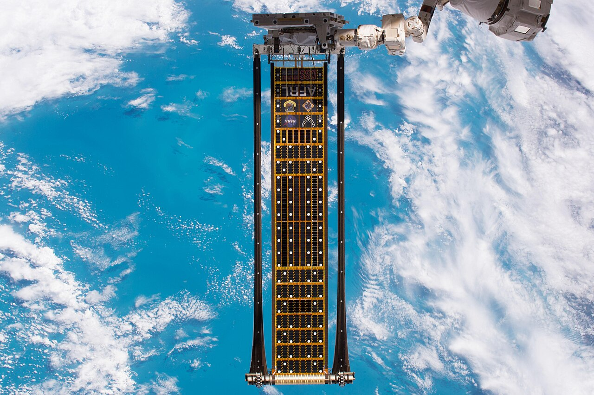

Above the atmosphere, the sun never sets and never dims.
In high orbit, sunlight arrives at about 1.36 kilowatts per square metre — roughly a third more than the best midday sun reaching the ground — with no clouds, no dust, no night for all but minutes of the year. That physics is why space solar keeps being proposed, and why serious agencies now study it seriously. Every satellite ever flown is proof the collection part works; the hard part is getting the energy down.

Beaming power from orbit — milliwatts, and a milestone
In 2023, Caltech's SSPD-1 demonstrator used its MAPLE experiment — an array of lightweight microwave transmitters steering energy by interference, no moving parts — to transfer power wirelessly in orbit, and to send a detectable signal to a rooftop receiver in Pasadena. It was the first time energy was deliberately beamed to Earth from space. It was also milliwatts. The gap between a detectable signal and a power station is the entire engineering problem, and nobody credible pretends otherwise.
The other SOLARIS
The European Space Agency's space-solar programme shares a name with our first park. ESA's SOLARIS studies a system that would deliver continuous power by radio waves from orbit, arguing a plant in space could produce up to seven times the energy of the same plant on the ground. Its own roadmap puts standard gigawatt-scale plants at 2040–2045, with a ministerial decision on whether to fund full development taken at the end of 2025. That is the most optimistic credible schedule in the field.
Lunar solar
The furthest-out version: build the arrays on the Moon — a stable platform with no atmosphere at all, potentially manufacturing panels from lunar material — and beam the output to receiving stations on Earth by microwave. Concept studies exist; hardware does not. Nothing at this scale has moved past paper, and the honest status is exactly that.
Mirrors that stretch the evening
A nearer, smaller idea: orbital mirrors that reflect sunlight onto solar farms after dusk — extending the generating day rather than beaming power. Reflect Orbital received US approval in July 2026 and plans to launch its first demonstrator, an 18-metre film reflector, late this year, with ambitions of tens of thousands of mirrors. The honest caveats: from orbit, a mirror's light spreads over kilometres and passes overhead in minutes, so each satellite delivers faint, brief light — and astronomers have raised serious objections to brightening the night sky. A real experiment worth watching; not yet a product.
What space gives — and what it charges
Space removes weather, night and atmosphere from solar. It does not remove thermal management: vacuum has no air to carry heat away, so panels shed heat only by radiation and run hot in full sun — a solved engineering problem on every spacecraft, but a cost, not the free win it is sometimes described as. And every path down runs through a conversion chain — sunlight to electricity to microwaves, across thousands of kilometres, back to electricity in a receiving field kilometres wide — where each step loses energy and each element must get cheap at once, launch included.
Every credible roadmap says the 2040s.
Caltech beamed detectable power in 2023. ESA's most optimistic schedule reaches gigawatt plants between 2040 and 2045. That is a generation after Solaris Three completes the fleet. Space solar is not a competitor to storage this decade or next — it is the industry our grandchildren might work in. And one detail rarely mentioned: a receiving station is a large field of antennas feeding the grid — it needs exactly what we are securing now. Strong connections and welcoming land stay scarce, whichever direction the power arrives from.
The evening is solved. The frontier is the week.
Lithium owns the first four hours and vanadium is our long-duration bet — that is the plan on the front page. The frontier question is what carries a grid through days, not hours. Four chemistries are worth watching, and one test applies to all of them.
Sodium-ion — lithium without the lithium
Salt-based cells with no lithium, no cobalt and better cold-weather manners. Prototype cells are approaching 200 watt-hours per kilogram, and August 2026 saw the chemistry's first commercial sale reported in Australia. Stationary storage does not care much about weight — it cares about dollars per kilowatt-hour, and sodium's promise is a structurally cheaper supply chain. This is the challenger our own cost assumptions watch most closely.
Iron-air — a hundred hours of rust
Iron-air batteries store energy by rusting iron and reversing it — dirt-cheap materials, very slow discharge, built for multi-day duty. Form Energy's first commercial system, 1.5 MW with 150 MWh — one hundred hours of storage — is being installed in Minnesota with the full project expected online in 2026, and a 10 MW / 1,000 MWh system is planned in Ireland. Low efficiency, enormous duration: a different tool, not a better battery.
Vanadium's next decade
Vanadium flow's ceiling is chemistry: how much vanadium dissolves in the electrolyte caps the energy per litre, and twenty years of research has moved that from roughly 25 to roughly 40 watt-hours a litre. The chemistry's real gifts are elsewhere — the electrolyte never wears out, holds its value, and can be leased rather than bought, made in Queensland from Queensland vanadium. The frontier for vanadium is not density; it is the cost of the stacks around it.
Hydrogen — dense and cheap, never efficient
We studied hydrogen storage in depth this year. Round trip, roughly two-thirds of the energy is lost — against under a fifth for batteries. But hydrogen's storage capacity itself is many times cheaper per kilowatt-hour, so past somewhere between seven and twenty hours of duration, the maths turns in its favour. The honest summary from our own work: hydrogen is a fuel for the rare long gap, not a battery for the nightly cycle.
One test for every chemistry.
Australian dollars per kilowatt-hour, at eight hours of duration, bankable in Australia before the end of the decade. CSIRO's GenCost 2025-26 prices grid batteries at A$385 per kilowatt-hour at four hours and A$308 at eight — that is the bar a challenger must beat, in a contract a lender will sign, not a press release. Our daily news filter watches every one of these chemistries against it.
What we're watching
- ESA's decision on funding SOLARIS full development — and whether any programme publishes an end-to-end beaming efficiency measured outside a lab.
- Reflect Orbital's first demonstrator: measured light on the ground, in numbers, versus the promise.
- Sodium-ion's first Australian grid-scale price in dollars per kilowatt-hour — the moment it becomes comparable, not just promising.
- Form Energy's Minnesota system through its first year — does one hundred hours survive contact with a real grid?
- Whether any vanadium system clears A$300 per kilowatt-hour at eight hours before 2028 — the number our own demonstrator decision waits on.
Sources · dated
Caltech, SSPD-1 / MAPLE wireless power transfer and mission wrap-up (2023–24) · ESA, SOLARIS programme pages and Thales Alenia system study (2023–25) · Reflect Orbital US approval and demonstrator reporting — ABC News, Dezeen (July 2026) · Form Energy and Great River Energy, Cambridge Minnesota project releases; Energy-Storage.news (2023–26) · pv magazine, sodium-ion prototype densities and first Australian sale (August 2026) · CSIRO GenCost 2025-26 Final (July 2026) · Flow Energy hydrogen storage study (August 2026), cost reference and daily brief archive. Figures as published at the dates shown; where a claim is a concept, we have said so.